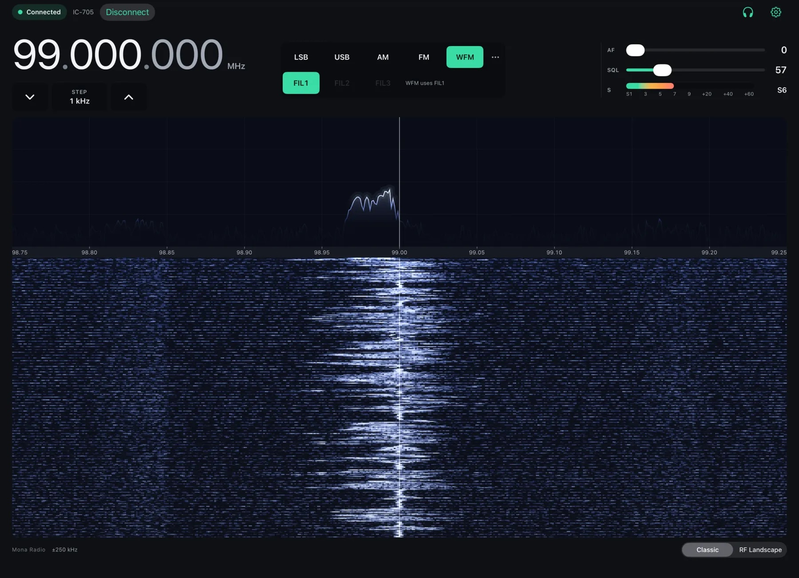
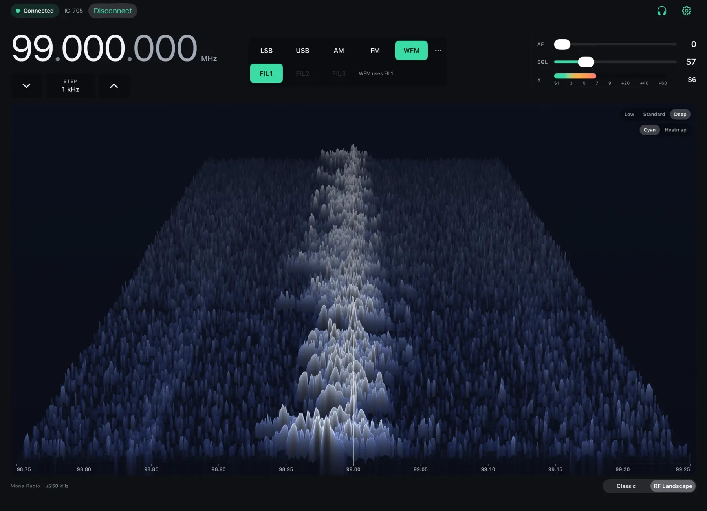

iPhone
Tune, listen and check the band from your pocket.

Mona Radio brings your amateur radio to iPhone, iPad and Mac — its frequency, spectrum, waterfall and receive audio, in an app shaped for each screen.

Apple ecosystem
The same radio, presented the way each device is meant to be used.
Tune, listen and check the band from your pocket.
A full operating deck: spectrum, waterfall and controls side by side.
A native desktop workspace, and the home of USB radios and Mona Relay.
Capabilities
Mona Radio shows what your radio reports — never what it assumes.
Frequency, mode, filter and tuning step, each confirmed by the radio itself, with a tuning dial that feels like one.
Your radio’s own scope as a live spectrum and scrolling waterfall — and RF Landscape, a dimensional view of the band.
Hear your receiver on the device in your hand, wherever you are on your local network.
Let one Mac share its radio with your other Apple devices — paired, encrypted and kept on your network.
Supported radios
One app for a growing set of transceivers and receivers.
Preview Available now; validation across more hardware continues. Control and transmit capabilities vary by radio model and validation status.
All radios and connectionsMona Relay Preview
Your Mac holds the connection to your radio. Mona Relay shares it — live state, spectrum, waterfall and receive audio — with the iPhone, iPad and Mac you choose.
Mona Relay is in Preview. Availability and features may change as validation continues.
In use
These genuine iPad captures show an earlier Mona Radio interface connected to a real radio. Current layouts may differ.

Setup
Join it to your network, or plug it into your Mac with USB.
Choose your radio, enter its connection details, and run Check.
Tune, watch the band and hear it — on every screen you use.
Independent software for amateur radio, made for Apple devices.